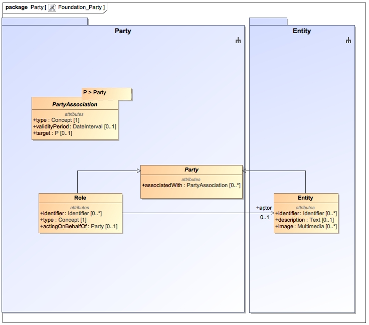

The Party package introduces four classes: Party, Role, Entity and PartyAssociation. Party is an abstract type that can represent either a real-world entity (e.g., a person) or a role (e.g., a patient role). Parties are associated to either other parties or to activities using the PartyAssociation class. The target of an association is always a party.
